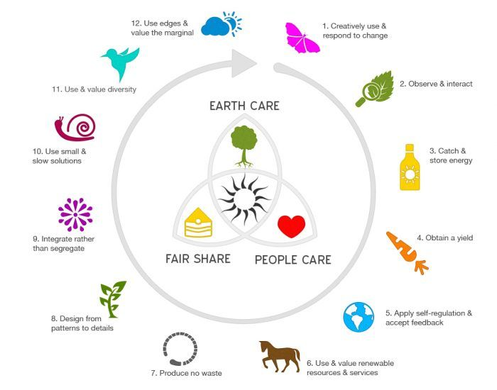

Permaculture

For more information on Permaculture click
here
Permaculture is a sustainable method of land management, focusing on the
use of natural resources and the principles of ecology. It involves the
development of perennial crops and perennial polycultures, the use of
organic materials and practices, and the re-establishment of natural
ecosystems. Permaculture works to reduce human impact on the environment
while increasing sustainability and self-sufficiency.
The 12 design principles of Permaculture
-
Observe and Interact: Take time to observe and understand the natural
patterns, ecosystems, and systems at play in the environment.
-
Catch and Store Energy: Harvest the energy of the sun, wind, and water
in the form of renewable resources and store it in ways that make it
available for future use.
-
Obtain a Yield: Utilize the stored energy to produce yields that can be
consumed or used in other ways.
-
Apply Self-Regulation and Accept Feedback: Use natural forces to help
regulate the system itself and pay attention to the feedback the system
provides.
-
Use and Value Renewable Resources and Services: Consider the entire
cycle of resource use and find ways to use resources more efficiently
and sustainably.
-
Produce No Waste: Utilize all resources that enter the system and find
ways to reuse, recycle, or repurpose them.
-
Design from Patterns to Details: Consider the big picture of the system
and the interactions between its parts before delving into the details.
-
Use and Value Diversity: Create multi-species habitats and maximize the
potential of each species.
-
Integrate, not segregate: Create relationships between elements and
maximize the benefits of each element.
-
Use Edges and Value the Marginal: Maximize the use of edges and the
marginal areas of a system.
-
Produce No Waste: Create closed-loop systems to ensure no waste is
created.
-
Design from Patterns to Details: Observe and learn from nature as a
model for designing systems.
What aspect of Permaculture do you think you would enjoy the most?